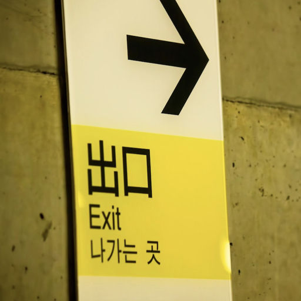
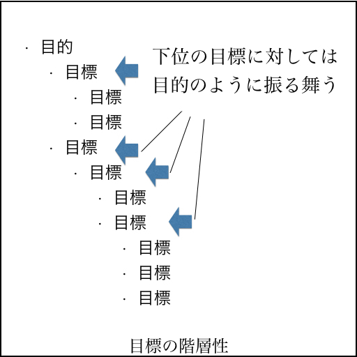
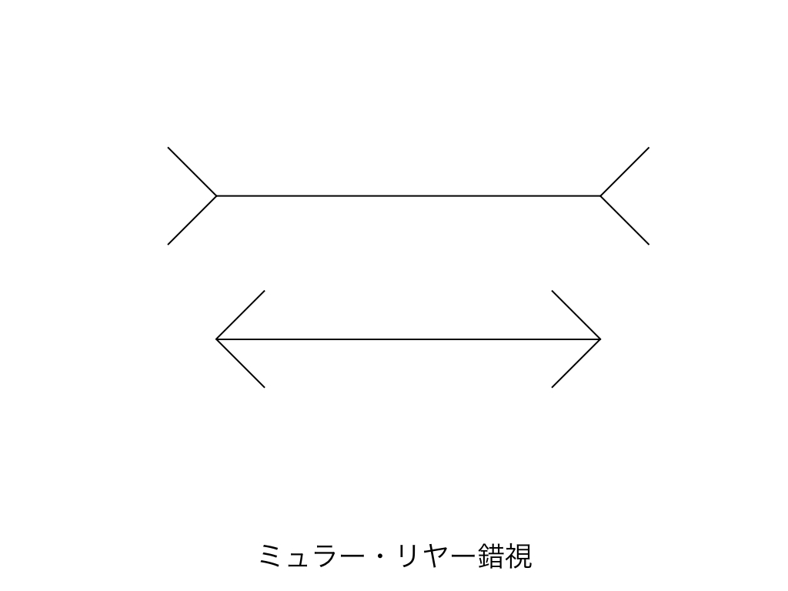

| 「目標」の研究 | |
| 倉下忠憲 | |
| R-style (2016) | |
倉下忠憲
夢や目標に関する話題は、ビジネス書でも頻繁に見かける。
「大きな夢を抱こう！」
「目標を立て、それに向かって邁進しよう！」
そのような言葉たちは、輝かしい人生や偉大な成功への切符みたいに思える。強い期待が湧き上がり、興奮も高まる。もちろん、促されるのは興奮だけではない。必要なノウハウもしっかり準備されている。なんといっても、そのために書かれているのだ。
「どのようにして本当の夢を見つけるのか」
「いかにして目標を行動に落とし込むか」
わかりやすく、効果的な（あるいは、そう思える）ノウハウたちは枚挙にいとまがない。ここまで準備されていれば、完璧だろう。情動とノウハウが揃っていれば、向かうところに敵はない──、と言い切っていいのだろうか。
そうしたノウハウの有用性を否定するつもりはない。たしかにそれは誰かには効果があったはずだ。しかし、その話だけで十分なのだろうか。何か話題が抜け落ちてはいないだろうか。
それを三つのお話で確認してみよう。目標についてのお話だ。
「一年の計は元旦にあり」
有名な言葉だ。
新しい年の計画は元旦に立てましょう、という実にまっとうな（響きのする）教訓である。実際に、新年の冒頭にその年の目標を立てると、素晴らしい一年が待っている気がしてくる。しかし、本当にそれで良いのだろうか。
この言葉は、中国の古い書物『月令広義』の「四計」から来ているようだ。四計とは、生活を充実させるための次の四つの計画のことである。
一日之計在晨
一年之計在春
一生之計在勤
一家之計在身
読み下してみよう。
「一日の計は晨 にあり、一年の計は春にあり、一生の計は勤にあり、一家の計は身にあり」
意味としては、「一日は早朝の計画で決まり、一年は春の計画で決まり、一生はまじめに勤めることで決まり、一家の先行きは健康で決まる」ぐらいになるだろう。
さて、違いに気づかれただろうか。四計では、「一年の計は元旦にあり」ではなく「一年の計は春にあり」となっている。もちろん、元旦は春だが、春は元旦ではない。微妙に意味がずれている。
「一日の計は晨 にあり」の、晨 は、次の日のことではなく太陽が昇り始める早朝のことで、その時間に当日の予定をいろいろ考えておくとよい、という教えであろう。
では、一日における「早朝」は、一年ではいつになるだろうか。当然「春」である。なにせ一年は春から始まるのだ。しかし、それは元旦ではない。
一年における元旦は、一日では深夜零時である。そんなタイミングで一日の計画を立てる人間はいないだろう。せいぜい、朝起きて、新聞を読んで、テレビのニュースをチェックして、なんならメールの受信箱も覗いてから、ようやく「さて、今日はどうするかな」と考え始める。深夜零時では情報が少なすぎるのだ。
だとしたら、一年の計画を元旦に立てるのは、早すぎるのかもしれない。
目標に言及するビジネス書には、まったく異なる二つのスタンスがある。一つは「ぜひとも目標設定を！」というもの。目標が持つ力を評価し、積極的にその力を利用する姿勢を持つ。代表例は『７つの習慣』だろう。
『７つの習慣』では次の七つの習慣が提唱されている。
- 第一の習慣 主体性を発揮する
- 第二の習慣 目的を持って始める
- 第三の習慣 重要事項を優先する
- 第四の習慣 Win-Winを考える
- 第五の習慣 理解してから理解される
- 第六の習慣 相乗効果を発揮する
- 第七の習慣 刃を研ぐ
この二つ目に「目的を持って始める」がある。
第二の習慣は、生活の様々な状況に当てはまるものであるが、最も基礎的な応用は、すべての行動を測るための尺度として、人生の最後の姿を描き、それを念頭において今日という一日を始めることである。そうすれば、自分にとって何が本当に大切なのかをベースに、今日の行動、明日の行動、来週の行動、来月の行動を計画することができる。
実に素晴らしい言葉だ。こうもある。
目的を持って始めるということは、目的地をはっきりさせてから旅立つことである。目的地を知ることで、現在地もさらによく分かるようになるし、いつも正しい方向に向かって歩み続けることができるようになる。
ここでも主張は明確だ。目的を持って歩み始めるからこそ、「正しい」道が選択できる。ただ進むだけではなく、「正しい」道を歩んでいけるのだ。では、「正しくない」道を選んでしまうとどうなだろうか。
もし、はしごをかけ違えていれば、一段ずつ昇るごとに間違った場所に早く辿り着くだけである。
その通りだ。どこにも反論の余地はない。必死で歩みを進め、ようやく到着したと思ったら、まったく期待外れの場所だったというのでは、あまりにも残念である。だからこそ、「目的を持って始める」わけだ。
直感的にはこうした意見は正しそうに思える。少なくとも論理的な破綻はどこにも感じない。しかし、もう一つのタイプのビジネス書はこの考え方や姿勢に、真っ向からNoを突きつける。
デイル・ドーデンの『仕事は楽しいかね?』は、物語形式を用いた自己啓発書で、ロングセラーのビジネス書でもある。登場するのは、ビジネス（というか人生）の壁にぶつかっている主人公と、ビジネスで大きな成功を収めた豊かな白ひげのマックス。そのマックスがメンターとなり、主人公を導くストーリーである。
まずマックス老人は、主人公に「成功のための戦略」を思いつく限り挙げさせる。そして、それを一枚の紙にまとめる。その紙には大きく二つのことが書かれた。一つが≪目標の設定≫で、もう一つが≪生きる姿勢を変える≫こと。なにやら『７つの習慣』が彷彿とされる。
その紙に書かれた≪目標の設定≫の項目には、「目的地を知らなければ到達することはできない。彼方の目標をしっかり見定めること。そうすれば、人生に望むものを人生から得ることができる。自分の人生をきちんと管理すること」といった言葉が並んだ。これまた聞き覚えのある言葉だ。そして、マックス老人はその紙に──きっとフォッフォッフォッと笑いながら──、大きくバツ印を打つ。そして、新しい紙を持ち出して、次のように書く。
「試してみることに失敗はない」
主人公は困惑してしまう。古今東西のビジネス書（自己啓発書）のアドバイスにバツをつけ、その代わりに出てきた言葉が「試してみることに失敗はない」だ。なんのことやらさっぱりわからない。
戸惑う主人公から解説を求められたマックスは、ジョン・ウッデンやロッド・サーリングといった「人生のある時点で仕事に対する目標を変えた人たち」を挙げ、目標に固執することの危うさを説き始める。もし彼らが最初に立てた目標に固執していたら、華々しい成功を手にすることは無かっただろう、と。マックスの人生に対する価値観は次のセリフからもうかがえる。
僕たちの社会では、時間や進歩に対して直線的な見方をしている。そういう見方を、学校でじわじわと浸透させるんだ――人生とは、やるべき仕事や習得すべき技術や到達すべきレベルの連続なのですよ。目標を設定して、それに向かって努力しなさい、とね。だけど、人生はそんなに規則正しいものじゃない。規則から外れたところでいろんな教訓を与えてくれるものだ。人生は学校の先生にとっては悪夢だろうね。
「人生はそんなに規則正しいもの」ではない。だから目標を設定して、そこに直線的に向かってもうまく到達できるとは限らない。これは「目標設定」への明確な拒絶と言えるだろう。
いささか老人の気むずかしい話にも聞こえてくるが、落ち着いて考えてみれば、マックスの言い分も理解できる。
自分の人生を振り返ってみたとき、当初そうなるとは予想もしていなかったことが起きた経験をお持ちではないだろうか。その時点では人生経験が足りなかったから予想できなかったと納得はできるが、では今の自分は十分に経験を積んでいるのか、言い換えれば、すべてを完璧に予想できるのかと考えるといささか難しい気がしてくる。
私もいまではこうして文章書きとして生計を立てているが、それ以前は田舎のコンビニの店長をのほほんとやっていた。物書きになる野心などカケラもなかったのだ。もし25歳の私に、「10年後のお前は文章を書いてお金をいただくようになっているぞ」と伝えても、まったく信じなかっただろう。人生とは何が起こるかわからないものだ。だから、「目標を設定して、それに向かって努力しなさい」という指針が、うまく機能しない場合があることも納得できる。
さて、この真逆に見える二つの主張は、一体どちらが正しいのだろうか。あるいは、「どちらが正しいのか」という問い立てが間違っているのだろうか。
アポロ計画をご存じだろうか。初めて月面まで人を運んだアメリカの偉大な計画だ。ケネディ大統領が高らかに宣言し、世界中に向けて設定した目標は、どう考えても無謀だと思われた。
まず私は、今後10年以内に人間を月に着陸させ、安全に地球に帰還させるという目標の達成に我が国民が取り組むべきと確信しています。（中略）そして、このプロジェクト以上に完遂に困難を伴い費用を要するものもないでしょう。
しかし、この目標は見事に達成された。まさに偉業が成し遂げられたのだ。そのためか、このアポロ計画は、困難な状況を乗り越えるために目標設定がいかに重要なのかを示すエピソードとしてビジネス書でもよく紹介されている。
たしかにそれはそうだろう。仮にケネディ大統領がこの計画を宣言しなければ、人類の月面到達は達成されなかったか、達成されるにしてももっと長い期間を要したはずだ。目標設定は、人を動かし、成果を生み出したのだ。
ではもし、ケネディ大統領が、「今後10年」ではなく「今後3年で」という目標を設定していたらどうなっていただろうか。あるいは月面ではなく火星へ、という目標であったらどうだろう。それでもやはりその目標は達成され、アメリカは偉大な成果を手にできたのだろうか。
これら三つのお話は、一つの方向を示している。それはなんだろうか。
簡単に言えば、私たちは「目標」をあまりよく理解してない、ということである。日常的に使う言葉ではあるが、その実体はうまく把握できていない。
思い返してみて欲しい。小学校でも中学校でも構わない。「目標の立て方」や「目標との付き合い方」を学んだ覚えがあるだろうか。少なくとも私にはない。あたかもそうした知識や技能は、誰から教わらなくてもごく自然に持ち合わせているかのように扱われていた。自明なスキル、というわけだ。
しかし、それが自明であるならば、なぜ目標について書かれたビジネス書がたくさん書店に並んでいるのだろうか。理由は一つしかない。「目標の立て方」や「目標との付き合い方」は自明ではないのだ。
だからこそ、本書では「目標」を研究する。当たり前とも思える物事に、丁寧に光を当てていく。そして、叛逆ののろしを上げる。
本書では、基本的なことから考え始め、目標のデメリットについても目配りしながら、最後には目標との付き合い方を再構築する。一見遠回りなようだが、ぐるっと一周回ってみることで、「目標」をより詳細に理解できるようになるだろう。そうすれば、これまで以上に目標とうまく付き合えるようになるはずだ。
さらに、目標と同じくらいビジネス書に登場する「夢」についても合わせて考える。おそらくこの二つは、今後の社会において重要さを増していくだろう。
旧世代の体制が疲弊し、変化を余儀なくされるこれからの日本社会では、個人が個人として生きていかなければならない場面がたくさん出てくる。もはや組織や偉い人にお任せの人生ゲームは存在しない。自分で人生の舵をとらなければならないのだ。
そうした状況では、「目標を立てること」が、人生そのものを左右する要因となりかねない。会社内で仕事をうまくやるために目標を設定する、といったことだけではなく、会社を辞めて独立する、といったことも目標の設定次第なのだ。もし、その目標とうまく付き合えなければ、悲惨な状況に陥るかもしれない。いや、そこまでいかなくても、いまいち自分にフィットしない人生が待っていることは十分ありうる。
自分自身にフィットした人生を送るためにも、目標との付き合い方はあらためて考えてみるのがいいだろう。本書を通じて、ぜひとも目標とのうまい付き合い方を学んで欲しい。もっと言えば、自分なりに考えてみて欲しい。
本書が目指すのは、読み終えた人が目標とうまく付き合えるようになることだ。目標についての雑学を増やすためではなく、自らの人生で実践できるようになることが目標である。そのためにコンテンツを準備し、文章を綴った。最大限の効果を上げるように、いろいろなところに工夫がちりばめられている。ほら、ここでも「目標」が顔を覗かせている。目標は、知らず知らずのうちに私たちの日常に浸透しているのだ。それを軽視してはいけないだろう。
それでは、始めるとしよう。
根本的な疑問がある。目標とは何だろうか。
一見簡単に思える疑問だが、では目標と目的の違いを説明できるだろうか。あるいは、夢、希望、野望、欲求、欲望、計画、戦略はどうだろうか。これらの言葉の差異を説明できるだろうか。
よくよく考えてみると、以上のような言葉を、私たちは意識せずに使い分けている。意味は内的に了解されているのだ。しかし、それぞれの概念が持つ機能について十分に理解できているとは言い難い。もしかしたら、そのことが目標の取り扱いに問題を生じさせているのかもしれない。
そこでまず、言葉の意味から取りかかってみよう。
例文を挙げる。
「今月の販売目標は、3台です」
よくある言い方だ。少なくとも不自然さはない。では、これはどうだろう。
「今月の販売目的は、3台です」
何かが変だ。感触が気持ち悪い。一方、次の二つはどうだろうか。
「あなたがここにやって来た目的はなんですか？」
「あなたがここにやって来た目標はなんですか？」
やはり後者は気持ち悪い。では、これはどうか。
「この施策の目的は、利用者の満足度を上げることです」
「この施策の目標は、利用者の満足度を上げることです」
不思議なことに、この二つはどちらにも違和感がない。ごく普通に使える。
ここで辞書を引いてみよう。デジタル大辞泉を用いる。
目標
目的
どうだろう。意味的な違いが掴めただろうか。
注目したいのは「目標」の一つ目の意味だ。「そこに行き着くように、またそこから外れないように目印とするもの」とある。目標の「標」という漢字は「しるし」という読みを持つので、目標は「めじるし」とも読める。よく道の分岐点に標識が立ててあるが、あれこそまさに「めじるし」だろう。そうした「めじるし」は、進むべき道のりを提示してくるが、その「めじるし」そのものを手にしても虚しいだけである。

こうして対比してみると、目標と目的の違いが見えてくる。
目的は、最終的に達成したい状態だ。目標は、そこに至るための目印となる。
「今月の販売目的は、三台だ」
から奇妙な感じを受けるのは、通常「車を売ること」が目指すべき最終的な状態ではないからだ。車を売ることを通して、売上げを作る、あるいは利益を生み出す。それが企業活動だろう。どれだけ車を売ったとしても、そこで利益が発生しなかったり、あるいは赤字を大幅に積み上げてしまえば企業活動には貢献しない。つまり、企業の「目的」は販売ではない。販売は目的を達成するための手段なのだ。
まとめると、目的とは、ある行動を通して得たいもの・結果・成果を意味する。目標はそこに向かうための目印、あるいは矢印だ。
だとするならば、
「この施策の目的は、利用者の満足度を上げることだ」
「この施策の目標は、利用者の満足度を上げることだ」
この二つの文に違和感を感じないことも理解できる。その施策が満足度を上げるだけで良いならば、それは目的と呼べるし、満足度を上げることで、たとえば利用者のリピート率を高め、結果的に売上げアップにつなげたいならば、それは目標となる。どちらの場合もありえるわけだ。
※ ※ ※
以上、目標と目的についてみてきた。
一つ言えるのは、目標には必ずその上位に目的がある、ということだ。目標は単なる目印でしかなく、それを通過することで、辿り着きたい実際の場所（＝目的）が他に存在している。つまり、目標だけが単独で存在することはない。目標は、目的とセットになって機能するのだ。
もう一度確認しよう。私たちは、何かの目的を達成するために目標を設定する。言い換えれば、目標を設定する理由は、目標そのものを達成するためではない。目標の達成はあくまで通過点であって、目指すものは別にあるのだ。
しかし、上記で見たように、目標と目的を言い換えても違和感がないことがある。そうしたとき、私たちは失敗を犯す。目的と目標を取り違えるのだ。
これが起こるのは、目的と目標がある特徴を持つからで、それが階層性である。
車の運転について考えてみる。
どこか遠くの場所に出かけるとしよう。たとえば、車で高速道路を三時間ひた走って辿り着くような場所を想像して欲しい。その場所は「目的地」と呼べるだろう。
しかし、いきなり目的地にはたどり着けない。最寄りのインターチェンジに向かう必要があるし、高速に乗ったら乗ったらで一時間毎には休憩もしたい。こうした個々のチェックポイントは、「目的地」に付随する「目標地」と捉えられる。その目標地を一つひとつクリアしていくことで、最終的な目的地に辿り着くのだ。
では、最寄りのインターチェンジに向かうとする。そのとき、運転手である私たちの頭の中はどうなっているだろうか。頭の中に地図を描き、「あの交差点で曲がって、次の次の交差点でもう一度曲がる」といった経路を設定しているのではないか。するとここにも小さな「目標地」が見出せる。
一番大きな目的地があり、そこに向かうための目標地があり、さらにそれぞれの目標地に向かうための小さい目標地がある。このように目標には階層がある。フラクタルな構造と言ってもよい。
視点を変えれば、ある階層に存在する「目標」は、別の目標の「目的」としても機能する。たとえば、インターチェンジに向かっているとき、通過する交差点は「目標地」なわけだが、そうするとインターチェンジは擬似的に「目的地」のように振る舞う。つまり、入れ子状になっているのだ。
このような関係は、すべての階層において存在しうる。

目標は目的とセットになっているわけだが、必ずしも近くにあるわけではない。乖離している場合もある。最終的な目的が大きければ大きいほど、その乖離は大きくなる。ここにトラップがあるのだ。
たとえば、最終的な目的地が北にあるとしても、最寄りのインターチェンジが南にあるなら、進路は南に取らなければいけない。短期的なスパンでは、ここに目的と実行の齟齬が感じられる。しかし、それは必要なことだ。商売で言う「損をして得を取れ」といった箴言も、このような目標の階層性からきている。
では、その階層性はどこまで下がっていけるだろうか。簡単だ。実行できる粒度までである。
車の運転をしているとき、車で三時間先の場所をイメージして運転する人はいない。インターチェンジですらない。目の前の道を見て運転する。ミラーで後ろをチェックすることはあるにせよ、視線はほとんど常に「少しだけ前」に注がれている。それが一番小さいレベルの目標だ。
今私はこうして本の原稿を書いているわけだが、完成した本のイメージを抱いているわけではなく、こうして書いている言葉がきちんと意味の通る文章になっているのかだけを考えている。この行為を行っているときには、最終的な目的は意識にはのぼっていない。そんなことを考えていたら、いつまでたっても一文を紡ぎ終えられないだろう。
目的が大きければ大きいほど、個々の目標は深い階層を持ち、実行レベルから乖離し始める。遠くなるのだ。これが目標と目的が持つ性質である。
もう一度確認しよう。目的と目標は階層性を持つ。
そして、どうあれ、私たちは車を運転するというレベルで物事を進めていく。目的がどれほど大きくても、最終的には「数ｍから数十m先を向いて運転し続ける」ことを実際のレベルにしなければいけない。その実行レベルでは、何かを計算する、何か文章を書く、誰かを説得する、という小さい行為が実施され、それを積み重ねることで、より大きな目的へと迫っていくことになる。
カードライバーの視点のたとえ話から、いくつかわかることがある。
まず、人を二つに分けてみよう。「計画者」と「実行者」だ。前者は将軍で、後者は兵士である。
将軍の視点は、計画を立てるときの視点だ。大きな地図を手にし、それを俯瞰しながらルートを策定する。その際、細かい路面状況までは考慮しない。代わりに、もっと大局的な情報に目を向けることになる。
対して兵士の視点は、車を運転しているときの視点である。できることはそれほど多くない。ともかく車を前に進める。安全に気をつけて、道を間違えないように車を進めていく。最終的な目的地のことは頭にのぼっていない。せいぜい数m先の道路の状況に意識は向かっている。
そして、私たちの日常は、そのような「実行者」の時間で満ちている。ここが大切なところだ。
私たちは24時間常に何かをしている。ボーッとしているときは、「ボーッとして」いるわけだし、寝ているときも「寝て」いる。何もしていないときですら、「何もしていない」ことをしている。人生に空白は存在しない。
私たちの「一日」という時間は、何かしらの行動で埋め尽くされている。生産的な行動もあるだろうし、非生産的な行動もあるだろう。ともかく、あまたの「行動」が一日を埋めているのだ。
なぜ目標の設定が目的達成の役に立つかと言えば、一つには、こうした行動群に方向性を持たせられるからだ。目的を達成するためにAの行動が必要ならば、一日の行動の中にAを増やせば良い。簡単な理屈だ。こうした行動の制御が、目標設定の第一の役割である。
目標設定の第二の役割は、そうした行動をとる気持ちを湧かせやすくすることだ。その行動が目的達成に貢献すると感じるから──言い換えれば、目的達成に近づけると感じるから──、人は、そうした行動に取り組む意欲を持つ。つまり、モチベーション・マネジメントの機能が目標設定にはある。ただし、ここには弊害もある。それについては次章で検討しよう。
さて、ここまでは車の運転にたとえてきたが、人生には空白がないことを考慮すると、その実体は車の運転よりも川下りが近いかもしれない。川下りは、アクセルを踏まなくても前に進んでいく。止めようと思っても無理だ。人生も同じである。
重要なのは次の二点だ。
一つは、時間は止められないこと。もう一つは、何かの行動を増やせば、何かの行動が減ること。なにせ手持ちの時間は限られている。やりたいことが一つ増えたからと言って、神様が「じゃあ、君だけ一日を25時間にしてあげる」とはならない。目標達成に必要な行動を増やそうとすれば、そうでない行動を減らさざるをえない。
目標を立てて、新しい行動（たとえば、15分のジョギング）を増やそうとするとき、人はそこに新しい行動を「追加」するような感触を覚えるが、実際はそうではない。何かを入れて、何かを抜く、つまり「交換」が適切なイメージなのだ。
なぜこのイメージが大切なのかと言えば、どこかに限界があるからなのだが、それについても次章検討しよう。
目標設定の意義について、もう一度確認しておく。
私たちは目的を達成するために目標を設定する。ではなぜ目標の設定が目的達成の役に立つかと言えば、私たちの日常を満たしている「行動」を、目的達成に必要な行動に寄せる効果があるからだ。
私たちの日常は「実行者」の視点で満ちあふれているので、「計画者」の視点で必要な行動を明らかにし（モチベーションアップ）、実際にそれらの行動を実行に移していくようにする。これが目標設定の役割である。逆に言えば、そうなっていない目標設定は根本的に機能しない。
さて、目標とその意義について理解が深まったところで、次はそれが持つ弊害について考えてみよう。
目標には力がある。動機を与え、方向性を決定し、行動を増やしながら、望む結果を導く。そういう力がある。
はたしてその力は万能だろうか。目標を立てれば、万事は順風に進むのだろうか。目標設定は、何もかもを解決してくれる魔法の水晶なのだろうか。もちろん、そんなはずはない。
一般的に、力はニュートラルなものだ。そこには善も悪もない。どう使うかが結果を左右する。名だたる強盗も、世界を震撼させるテロリストも、「目標」を持っているだろう。目標を持つことそれ自身が善であるとは言えないのだ。
また、力が大きければ大きいほど、反作用のマイナスも大きくなる。つまり、失敗の弊害も大きくなる。目標に人類を月に導くだけの力があるならば、その弊害は深刻なものになるにちがいない。
総じて言えば、目標の取り扱いには注意が必要なのだ。
そこで、よくある目標の失敗とそれによって引き起こされる弊害を確認していく。失敗自体はよくある話で、誰もが一度や二度は経験しているだろう。
失敗が、単に失敗だけで終わることもあるし、他の悪影響をもたらすこともある。また、失敗を起こさないための解法が容易なものもあるし、そうでないものもある。後者のようなものは、十分な注意が必要だろう。
では、以下の四つをそれぞれ見ていく。
あらゆる喜びは思いちがいから始まる。
立てた目標を忘れてしまう。目標に関して一番ありがちな失敗がこれだろう。
元旦にあれほど強い決意を持って立てた目標も、正月休みが終わればすっかり忘れてしまう。目標の内容だけではなく、自分が目標を立てたことすらころっと忘れる。そんな状況で目標を達成できたとしたら、奇跡としか言いようがない。現実はもちろん冷酷である。
なぜ、目標を忘れてしまうのだろうか。そんな疑問を持ちたくなるが、むしろそれは当たり前のことなのかもしれない。
第一章で紹介した『仕事は楽しいかね?』の中で、登場人物のマックスがこんなことを言っている。
目標を設定すると、自己管理ができているような気がするものだ────
この言葉が真実の大半をえぐり取っているだろう。私たちは目標を立てただけで、それを達成した気になってしまう。
ケリー・マクゴニカルの『スタンフォードの自分を変える教室』にはこうある。
実際はこれから何をすべきかがはっきりしただけなのに、リストを完成させた達成感があまりに大きくて、あたかも目標に向かって前進したかのように満足してしまうのです。
目標を達成するために必要な行動をリストアップしただけで、その目標に向かって前進したかのような満足感を得てしまう。リスト完成の達成感が、最終的な目標の達成感を代替してしまうのだ。おかしな話である。今まさにスタートラインに立ったはずなのに、気分はもうゴールなのだ。
もっと悲惨な記述もある。
人は目標にふさわしい行動を取る機会が訪れただけでいい気分になってしまい、実際に目標を達成したような満足感を覚えてしまうのです。
リストアップすら必要ない。「ふさわしい行動を取る機会が訪れた」だけで、満足感を感じてしまうのだ。たとえばセミナーに出席したり、目標に関するビジネス書を読み終えただけで、自分の目標が達成されたかのような満足感を感じる。これでは行動は生まれようもない。
新年に目標を立てる。すると、まるで自分が新しく生まれ変わったような気がしてくる。それだけで何かを為した気になってしまう。行動はこれからだというにもかかわらずだ。あるいは、新年は目標を立てる良いチャンスだ、と思っただけでも満足してしまうことすらありうる。
だとすれば、目標を立てただけでは、その後のアプローチが取られることはほぼないと考えてよいだろう。また、目標をどうやって覚えておくかといった「些細なこと」が気にされることもない。
こうして目標は、やすやすと忘却の淵に吸い込まれていく。
すると、どうなるだろうか。単に忘れるだけなら害は少ない。しかし実際はもっとタチの悪い状況が起こる。
一時的に忘れていたとしても、何かの機会にそれを思い出すこともあるだろう。そんなときにどんな気持ちがするだろうか。新年に目標を立てたのに、すっかりそれを忘れて何の行動も取っていない自分が自覚される。あまり心地の良いものではない。自尊心が傷つくこともある。自分が立てた目標を思い出すたびに、そういう感情がわき起こってしまう。結果、目標について考えることが嫌になる。
そうなってしまえば、目標を達成するために必要な行動も促されない。目標の設定は、本来そうした行動を促すためのものだったはずが、それとは逆の結果を引き起こしてしまうのだ。あまりに悲惨な状況である。これには気をつける必要があるだろう。
目標は、実行に移さなければ目標ではない。夢にすぎない。
たとえば、「有名人になりたい」という目標を立てたとしよう。忘れないように、それを大きな紙に書いて、机の前に張り出しておく。これでばっちり──だろうか。
気になるのは、この目標からどのような行動が促されるかだ。
車のドライバーの視点を思い出そう。遠方の場所に出かけるためには、まず手近なインターチェンジに車を向けなければならない。それがはっきりしていないと、どこに車を進めていいのかもわからないし、次の道をどちらに曲がっていいのかも判断できない。
目標が行動を促すためには、具体的な行動がはっきりわかることが必要だ。逆に言えば、行動がはっきりするような目標でなければ、単に目標を立てただけで終わってしまう。むしろ、気になることが増えるだけの結果となるだろう。
何かをやるべきだと感じていても、実際に何をすればいいのかわからないのは大いにストレスである。つまり、曖昧な目標は、行動を促進しないばかりか、ストレスも加圧する。これが目標の弊害の二つ目である。
目標は漠然と立てただけでは、効果は発揮されない。目標には行動を促す力があるにせよ、どんな行動を取ればいいのかが明らかになっていないと、その力は発揮されない。
未来を予測する最善の方法は、自らそれを創りだすことである。
具体的な行動が定まるにしても、サイズ違いの目標というのもある。
理想的な体型になることを目的として、腹筋を一日100回する目標を立てたとしよう。しかし、そのとき自分の精一杯が腹筋10回だったとしたらどうだろうか。待っているのは挫折である。
面白いことに、100人にアンケートを採れば、70人以上が自分を「平均以上」だと答えるらしい。非常に不合理なのだが、おそらく私もそう答えるに違いない。つまり、人間は自分の能力を過大評価してしまう生き物なのだ。
似たようなことは、手持ち時間についても言える。私たちはあたかも時間が無限にあったり、あるいは極限まで圧縮できる気がする。
誰かに何かを頼まれたとき、「はい、いいですよ」と答えているときの自分は、その頼まれた行動をとるためには、別の何かを減らさなければいけない気はしていない。本来は、行動は常にトレードオフなはずである。しかし、時間が「見えない」私たちは、いくらでも空白のブロックに予定を詰め込めるような感覚を持ってしまう。多少無理を感じるところも、「効率的にやれば」と、行為にかかる時間を減らしたり、あるいはまったく無くしたりできるように感じる。実際それは空想であり、時間はいつだって後から足りなくなる。しかし、私たちはその空想をベースに予定や計画を立てがちだ。
行動経済学者ダニエル・カーネマンの『ファスト＆ スロー』に面白いエピソードが出てくる。彼を含む有志が、新しいカリキュラムと教科書を作ろうと計画したときのことだ。彼が参加しているメンバーに、「どのくらいでこの教科書は完成するか」とアンケートを採ると、おおよそ2年±半年という結果に落ち着いた。実際的な感触として、それぐらいの期間があれば完成するだろうという予想はだいたい皆で共有されていたわけだ。結果はどうだったか。教科書が完成したのは八年後だったと言う。凄まじい誤差ではないか。
ここで興味深い話がある。カーネマンはアンケートを採った後、カリキュラム作りのエキスパートであった別のメンバーに「似たような事例はどうだったか」を尋ねている。返ってきた答えは、「全体のうち40%は頓挫し、完成したものでも七年以上、十年以下の期間を要した」だったそうだ。実際の八年という結果に見事にフィットしたデータである。しかし、そのデータを知っていたエキスパートであっても、自分が関わっているプロジェクトについては、二年ほどで完成すると楽観的な答えを出している。不合理な話ではあるが、その実よくある話なのだろう。
このように、過度に楽観的な計画を立ててしまう現象を、カーネマンは「計画の錯誤」と呼んでいる。彼によれば、その対処方法は「外部情報の入手」にあるらしい。ようは「自分たちと似た他のグループでは、どんな結果が出たのだろうか」と自ら問い、そのデータを自発的に探すのだ。もしカリキュラム作成のメンバーが、エキスパートの答えを先に聞いていれば、二年±半年などという答えは赤面して出せなかっただろう。
ともあれ、人間が持つさまざまなバイアスの影響によって、人が瞬間的に思いつく計画は、だいたい甘く見積もられてしまう。自分には能力がある、自分は意志が強い、自分には時間がある。そんな思い込みが入った状態で計画を立ててしまうわけだ。結果はどうなるか。もちろん計画通りにはいかない。いくはずがない。なぜなら、はじめから実行できる計画ではなかったからだ。
こうなると、二つの厄介な事態が生じる。一つは逆締切効果で、もう一つは自尊心へのダメージだ。
※ ※ ※
目標の設定は、締切の設定でもある。そして、締切というものは、直前までは大きな効果を持つが、一度それを過ぎてしまうと、「どうせ遅れてしまったんだから、まあいいだろう」という心理をもたらしてしまう。これは「どうにでもなれ効果」(The What-The-Hell Effect)と呼ばれているのだが、ようは、心理的な重みづけが変わってしまうのだ。
一日遅れるなら、二日遅れるのもさほど変わらない気がする。夏休みの宿題がどう考えても間に合わないなら、少しでも努力して終わりに近づけようとする気持ちよりも、まるっきり手をつけないで別のことをやろうという気持ちが強くなる。こうなると、行動は生まれようもない。
他にも問題はある。計画の未達が、自分の能力不足のせいに感じられてしまうのだ。「できない自分」が意識され、挫折感が生じる。その挫折感は次からの行動も阻害してしまう。
さらにやっかいなのは、そうして傷ついた自尊心を回復させようと、もっと大きな目標を立ててしまい、結局それも失敗となって......と悪循環に入り込んでしまうことだ。そういう状況にはまり込むと、「ものすごい成果」を確約してくれる悪質なセミナーに惹きつけられやすくなるので注意が必要である。
このように、人間の楽観的なバイアスと、そこから引き起こされる「計画の錯誤」は厄介なのだが、ひとたびそれを「他人のこと」として考えると、バイアスはほとんどなくなってしまうらしい。
人間が過大評価するのは、「自分」（たち）についてなのだ。他人へのアドバイスだと、そのバイアスは消えてしまう。この非対称性は注目しておいてよいだろう。
私は自分のすべてを理解することはできない。
具体的で適切なサイズの目標を立てられたとしよう。それでもまだ、問題は残っている。達成したいことと、実際にやる行動の不一致がそれだ。
たとえば、達成したい目標に適さない行動を取ってしまう。あるいは、目標には適しているが、一番大きな目的には適していない行動をとってしまう。普通に考えれば、そのような乖離──やるべきことと実際にやることが違っている──は起きないような気がする。しかし、これは頻繁に起こりうるのだ。
前章で確認したように、目的と目標は階層的な構造を持つ。目的のための目標、そのための目標、そのための目標とどんどん細分化していける。その細分化の中で、一番大きい目的と目標がずれてしまうことがあるのだ。
ゆっくりと生活したいという目的を持っていたとしよう。そのためには十分なお金が必要だと思い立ち、仕事に打ち込む目標を立てる。激務、激務、激務。気がつけば、ゆっくりした生活とまったく無縁の人生を送ってしまっていた......。
このようなズレは、経済学の用語では「合成の誤謬」、システム学では「部分最適」と表現される。どのような表現を使ってもいいが、その根本は、目的と目標の階層性にあるのだ。
目標に注目するあまり、目的を見失っている。あるいは、「目標の達成」そのものが目的化している。いっそ、目標のために生きてしまうと言ってもいいだろう。これをこじらせると、自分が夢を持っていないと不幸に感じるという症状も出てくる。要注意である。
※ ※ ※
どうあがいても、私たちに取れるのは具体的な行動だけだ。だから、私たちは自然とその行動レベルだけで目標を評価しがちである。それがズレを生じさせてしまう。
なぜなら、すべては流動しているからだ。社会も変化し、自分も変化する。人生は固定されていない。階層の上部は緩やかにであれ確実に変化している。それなのに、「目先の目標」のことしか考えていなければ、徐々にズレは拡大していくだろう。目的にそぐわない目標に向かって邁進する結果がやってくる。これでは人生の満足度が上がらないばかりか、下がってしまうこともある。気をつけたいところだ。
また、これとは違った「ズレ」もある。
リチャード・P・ルメルトの『良い戦略、悪い戦略』で触れられているが、状況を改善するためには、困難な課題を乗り越えなければいけないことが多い。にも関わらず、その困難さを直視するのを避け、誤った状況認識をした上で、それに合わせて計画や目標を立ててしまうのだ。つまり、「解決すべき課題」ではなく、「解決できる課題」を目標にしてしまう。そんな目標をいくら達成したところで、困難な状況はクリアされない。
このように目的、目標、行動は必ずしも一致するわけではない。それが目標達成を阻害してしまうのだ。
目標に関する失敗と弊害を確認してみた。
目標には力がある。それを受け入れると、目標の扱い方は慎重にならざるを得ない。力は制御しないと、暴走する危険性がある。
また、目標に力があるにしても、それをうまく使えるかどうかは別の話である。人間が持つ記憶力の弱さ、バイアス、見通しの甘さ、問題設定の難しさなどが関与してくる。それを意識できないと、目標設定は行動のプラスになるどころか、マイナスになってしまう。さらに、自尊心が傷ついたり、望んでもいない結果をもたらすこともある。自らが立てた目標に苦しめられてしまうのだ。
しかし、目標設定がうまくいかないのは、バイアスから逃れられない私たち人間の宿命でもある。皆が背負う業のようなものだ。その点は十分に踏まえておきたい。
最後にもう一度繰り返そう。目標そのもには善悪はない。「目標を立てることが素晴らしい」と考えている人間は、卑劣で極悪な集団でも何かしらの目標を掲げて活動していることに思いを馳せた方がいい。目標を立てることと、立てた目標が適切であるかどうかは、別のレイヤーなのだ。目標が大好きな人間は、その点に重々注意した方がいい。間違った方向に、全力で進んでしまう目標もありうる。
では、どのように目標と付き合えばよいのだろうか。次章ではそれを検討する。
前章では、目標が持つ弊害について確認した。機能する目標は、その逆であればいい。
まず、立てた目標を忘れないことが必要だ。しかもそれは「大切な目標なら忘れないはず」といった楽観的姿勢ではいけない。「立てた目標を懸命に覚えようとする」という直線的な自助努力であってもいけない。私たちの記憶力にとって、そうしたハードルはあまりにも高い。記憶力への安易な過信は禁物である。でないと、足元を掬われる。
また、目標を立てただけで達成感を得てしまうことも、忘却を幇助する。たしかに自分にとって大切なことは忘れにくいかもしれないが、達成感を感じたものは用済みとばかりに処理されてしまうだろう。つまり、忘れやすくなるわけだ。
よって、立てた目標は必ずどこかに書き留めておかなければならない。それも、普段目にするところか、すぐさま参照できる場所にだ。そうしなければ、強い決意を持って立てた目標も、ボロボロと脳からこぼれ落ちていく。
ここまでは、環境をいかに設計するの問題だった。目標を書き留めておけばいいのだ。難しいのはここからである。
機能する目標は、具体的かつ、ほどよいサイズで、自分が抱える一番大きな目的と接続していなければならない。仮に、そうした目標を設定できるなら、人は前に向かって歩みを進められる。無謀でもなく、かといって無難すぎることもない道を歩いて行ける。それは、充実感を感じ、自分の何かが変わっていくような感覚を味わえる旅路になるだろう。
では、そうした目標は、どうすれば設定できるだろうか。
人間が抱えるバイアスについて知っているだけでは十分ではない。たとえば、人間の視覚は「ミュラー・リヤー錯視」という錯覚を持つ。同じ長さであるはずの線分が、矢印の向きによって違っているように見えるのだ。人間の視覚は不思議な性質を持っている。

しかし、この「ミュラー・リヤー錯視」という現象を理解していたとしても、私たちの目にはやはり線の長さは違うように見えてしまう。知識がバイアスを消すわけではないのだ。せいぜいできることは、「ああ、これは錯視が起こっている状態だな」と後から認識をあらため、物差しを持ってきて実際に長さを測り、「線の長さは違うように見えますが、実際は同じです」と言うことだけだろう。
目標に関するバイアスも同じである。自分の能力を過信したり、工程を甘く見積もりがちなことを知識として知っていても、やはり過信や甘い見積もりが浮かんでくることは止められない。人間の不合理性の権威であるカーネマンすら、甘い見積もりをしていたことを思いだそう。
私たちは、バイアスを持つ。それは知識を持っていても変えられない。しかし、その感覚から出た結論を後から補正することはできる。
もう一度書く。「具体的で、ほどよい大きさで、自分が抱える一番大きな目的と接続している目標」は、バイアスによってうまく立てられない。これは人間が抱える宿命のようなものだ。別に悪いことばかりでもない。未来に対して、実際以上の期待を持てるから、人は希望を持って生きていける。その視線があまりに冷静すぎると、希望よりは絶望の方が多くなってしまうだろう。少しくらいの楽観志向は、前向きに生きていくために必要なのだ。
しかし、それによって生まれる目標は、常に「現実的」なものではなくなってしまう。そして、それが弊害を引き起こすのだ。
だったら、どうすればいいのか。「目標を立てること」を段階的に捉えるのだ。
非常に残念ながら、私たちは「目標を設定する」ことを安易に捉えすぎている。あたかもそれが簡単なことであるように感じているのだ。しかし、人間のバイアスを考慮するならば、それは決して簡単な作業ではない。よって、「目標は簡単に設定できる」という考えをまずは捨て去ってほしい。この認識が、すべてのスタートとなる。
目標の設定が難しいのだとしたら、それに習熟していない人間が立てた目標は、機能しない目標となる。うまくいかなくて当然なのだ。その際私たちは、実行者の自分の方を責めてしまうが、実際は目標を設定した自分の力不足なのである。
極めて無能な将軍がいるとして、彼は常に全軍を突撃させる。なぜなら、彼がそうしたいと願っているからだ。戦場の状況はまるで関係ない。実行できるかどうかも考慮しない。全軍突撃すべきだと思うから、命令は全軍突撃となる。理屈はすべて後づけで、状況が悪化するほど過剰に楽観的な計算が出てくる。結論が決まっているから、帳尻を合わせるために必ずそうなってしまうのだ。
それで戦争に負けるのは兵士の実力不足だろうか。そんなはずはない。命令者が無茶な目標を設定したのが悪いのだ。
兵士の力を活かすも殺すも将軍の能力次第である。そしてそれは、いかに適切な目標を設定できるのかにかかっている。それは天賦の才というよりも、一つの技能だ。だから、経験によって鍛えられる。
そのように考えて、目標設定を四つのステップで捉え直す。
それぞれ確認しよう。
■目標を立てる
目標を立てるための最初のステップは、目標を立てることである。矛盾しているというか、循環しているように感じるが、そういうわけではない。
最初は気にせず目標を立てればいい。最終的にどうしようとも、まずはとっかかりがなければスタートできない。スタートしなければ補正のしようもない。この目標は、真なる目標というよりは、仮置きやお試しの目標と捉えておけばいい。「一応、目標を設定しておく」ぐらいに思っておくのだ。そうすれば、うまくいなくても、自尊心に傷がつくのを避けられる。
もちろん、こうして立てた目標は、どこかに書き留めることが必須だ。また、できる限りにおいて、具体的な行動を明らかにしたり、数値として測定できる成果を設定するように心がける。「体重を10kg減らす」「腕立て伏せを毎日10回する」などは、わかりやすい例だろう。
もう一点、あまり長い期間が必要な目標は立てない方がいい。半月、せいぜい一ヶ月程度のスパンで設定すること。なんなら一週間でもいい。なにせこれはお試しの目標だ。長期的なものに取り組める段階ではない。自分が目標設定の初心者であることを忘れないようにしておこう。
ともかくそうして目標を立てる。それが第一歩だ。
■目標を振り返る
決めていた期間が終わったら、その目標を振り返ってみる。成果はどうだっただろうか。きっと、思ったようにはならなかっただろう。たいていの人は、ここで嫌気が差し、意気消沈してしまう。しかし、これはまだ目標設定の序の口に過ぎない。幸い「お試し」の気持ちで設定した目標だから、嫌になる気持ちはさほど湧いてこないだろう。
そこで、徹底的に振り返る。目標と実績のズレはどれくらいあったのか。どのような理由でそれがズレたのか。予想外に起きたことは何か。障害となったのは何か。それらを掘り下げる。
ここで問題点が明らかになればしめたものだ。それを改善すれば、より目標達成に近づける。ただし、この分析自体にも、バイアスがかかることは忘れてはいけない。この問題点は、後々クリアしていく。
■全体を俯瞰する
問題点がクリアになったところで、いったん身を引いて全体を俯瞰してみる。ここが大切なポイントだ。
たとえば「体重を10kg減らす」という目標を立て、それがうまくいかなかったとしよう。十分な運動ができなかったのがその理由だと仮説を立てたとする。それを解決するためには、ジムに通うのが良さそうだと思い立つ。しかし、そこで立ち止まって考えるのだ。たとえば、「月に数万円を使うほど、自分は痩せたがっているのか」と。そのお金を別のことに使った方が、人生をよりよく過ごせるかもしれない。しかし、目先の「目標」とその達成に集中しすぎると、それより大きな対象のことが見過ごされてしまう。木を見て森を見ずという言葉があるが、それに倣えば、「目の前の目標を見て、一番大きな目的を見ず」となるだろうか。そして、特にやりたくもないようなことに時間やお金を使ってしまう。
ダイエットはわかりやすい例としてあげたが、企業のプロジェクトにおいても同様の失敗が生じる。たとえば「コンコルドの誤謬」（※）がまさにそれだろう。運用段階で赤字が見えていたにも関わらず、「威信を賭けた」プロジェクトはそのまま最後まで突き進み、結果大幅な商業的失敗をたたき出した。金額の大小はあるにせよ、日本の企業でもよく見受けられる話だろう。
※Beware Of The Concorde Fallacy
一度スタートさせたことには、特別な（心理的な）重みが生じてしまい、撤退が難しくなる。個人が掲げる目標も同様だ。だからこそ、冷静な判断が必要となる。
※興味があれば「サンクコスト」で検索してみるとよいだろう。
とりあえず、少しだけ取りかかる。それが「とっかかり」である。その後で、自分の行動ややりたいことを振り返ってみる。そうすることで、自分自身の価値観を確認できるようになる。もし、一時的に煽られて熱中してしまったとしても、時間が過ぎれば心は沈静化していく。そんなことは良くあることだし、それ自体に問題はない。問題があるとすれば、そうした「限定的な自分」が立てた目標に束縛され、自尊心を傷つけてしまうことだ。そうした事態は、できるだけ避けたい。だからまずはお試しで目標を立て、実際にいくつかやってみるのだ。その結果を、一歩下がって振り返ることで、自分の価値観とのズレが確認できる。
それでもやりたいと思えるなら続ければいいし、そうでないなら、その段階で止めて、別の目標に切り替えればいい。難しい話ではないし、恥ずかしい話でもない。
ともかく、
「これは本当にやるべきことだろうか」
「これは何かしら意義があるのだろうか」
と問うことだ。このステップは非常に重要である。
■もう一度目標を立てる
ここまできたら、もう一度目標を立て直す。すでに実績の情報もあるし、自分がやるべきと感じているかも落ち着いて考えられているだろう。当初は真っ白だった地図にも、少しは地形が浮かび上がっているはずだ。そこで立てる目標は、最初に立てたものよりも、より具体的であり、サイズ感も適切になっているだろう。また自分の価値観とのズレも小さいはずだ。つまり、目標設定力がレベルアップしたのである。
ただし、これで終わりではない。先ほども述べたように、目標の分析自体にもバイアスがかかっている。だから、そこには過ちが含まれていることもある。だったらどうするのか。
同じことを繰り返すのだ。立てた目標を後から振り返り、分析し、一歩引いて俯瞰してから、もう一度目標を立てる。そうすれば、また少しフィット感が強まる。あとは、これを繰り返していく。そのようにして、非現実的すぎず、現実的すぎもしない目標が徐々に設定できるようになる。
それを続けていくうちに、自分がどのくらいのことを成し遂げる力があるのかが──バイアスを抜きにして──わかるようになり、また、自分がどんな行為に価値と意義を感じるのかもわかるようになっていく。
目標設定力が上がるとは、自分自身を知る、ということだ。その上で、必要な戦略を練る力を持つ、ということでもある。
■
以上のように、目標設定をプロセスとして捉えると、驚くことに「終わり」がなくなってしまう。一つの目標は、常に改善されうる対象となるのだ。仮にその目標が達成されたら、新しい目標を設定することになるし、達成されない場合は、目標を修正することになる。そして、それが絶え間なく続いていく。
もし、自分の置かれている状況が変われば、あらためて目標を設定することになるだろう。状況が変わっても同じ目標を立てるかもしれないし、状況に応じて路線を切り替えることもありうる。ともあれ、どんな選択をしようとも、それは自分の選択と言える。一時の迷いに流された、なんてことはない。自分が何をすべきかを何度も考えてきたのだから、その精度は高いはずである。たとえそれが理屈のバックアップを持たず、直感的な決定であっても、たびたび自分がやるべきことについて考え、実行し、その結果をフィードバックとして受け取っていたのならば、その直感には十分に信頼が置ける。気まぐれなどではない。
ともかく、こうして定期的に目標について考えている間は、自分の価値観と行動が大きくずれる心配はない。
世の中には、一つの目標に向かって邁進することを異様に有り難がる風潮があるが、実際「愚直すぎる邁進」は、目をつぶって全力疾走しているのと変わりない。それが安全な場所なら問題は起きないが、崖近くだと致命的な結果になってしまう。
一番怖いのは、自分と目標が「ズレ」ていることだ。人は、えてして落ち着いて考えて答えを出さなければいけないときほど、考えを止め感情的に、あるいは惰性的に行動を決めてしまう。以前に立てた目標にこだわり、適切な行動について考えるのを止めてしまう。それは端的に言えば、暴走であるし、別の言い方をすれば、自分を棄てることでもある。もしそんな状況になるくらいなら、目標など持たずにのほほんと生きている方がはるかにマシであろう。
目標の設定プロセスを紹介し終えたので、冒頭に提示した三つのお話をもう一度振り返ってみよう。今度は逆順でいってみる。
まずは「月旅行」の目標だ。
もしケネディが、月面ではなく火星への旅行を設定していたら、当然その計画は頓挫していただろう。それは、月面旅行で「今から3年」と短い期間に設定した場合でも同じである。つまり、適切なレベルのギリギリの目標を設定できたことが、大統領の手腕だったわけだ。
では、『７つの習慣』と『仕事は楽しいかね?』はどうだろう。この二つは、どちらが正しいのだろうか。
目標について一通り考えた後で、あらためて確認してみると、この二つはそれほど違っていないことに気がつく。『７つの習慣』は一見トップダウン志向であり、『仕事は楽しいかね?』はボトムアップ重視のように理解されるが、それはあまりにも短絡的だ。
『７つの習慣』の第二の習慣は「目的を持って始める」であり、よくよく確認すれば、大きな目標をブレイクダウンしていきましょう、などといった言説は出てこない。せいぜい一番近しいのが、自分の人生の最後の姿を思い描いて、それを念頭におけば、今日の行動、明日の行動、来週の行動、来月の行動が計画できる、という記述だろう。
これは一般的にイメージされる「来月の目標を決めて、そこから来週の目標を決めて」といったブレイクダウンとは少し違っている。著者が口を酸っぱくして主張しているのは、「一番大きな目的から目を逸らさないようにしましょう」なのだ。そして、その一番大きな目的は、ミッション・ステートメントという形で記述されるのが望ましいと述べられている。
ミッション・ステートメントは短期間に書けるものではない。深い反省、注意深い分析、入念な表現、そして多くの書き直しを経なければ、完成には至らない。本当に自分のものにするには、あるいはそれが自分の心の奥底の価値観と方向性を十分に表現できるまでは、数週間あるいは数か月を要するかもしれない。そして何度も復習を重ね、年月と共に理解が深まり、状況が変化していくに伴い、細かい修正を加えることが望ましいだろう。
どのように読んでも、「一度設定した目標をブレイクダウンし、それに邁進しましょう」とは読めない。むしろ、流動的かつダイナミックにそれを書き換えることが推奨されている。推敲せよ、と言うのだ。
ここからわかることは、人生にとって一番大切なこと（最大の目的）は、簡単にはわからないということである。そして、時間をおいてミッション・ステートメントを書き直すことは、実はボトムアップなのだ。言い換えれば、ボトムアップ・アプローチで、トップダウンに機能するもの──最大の目的──を見出すわけだ。これは一番最初に決めた目標に、盲目的に従う姿勢とはまるで違う。
一方、『仕事は楽しいかね?』のメンター役であるマックス老人も、目標をまったく持っていないわけではない。
「今とは違う自分になる」
彼はそれを恒常的な目的として掲げている。これには（死以外には）終わりがないので、壮大な目標だと言えるだろう。
常に新しい自分が、次なる一歩を決めていくわけだが、当然その一歩は過去の一歩に影響を受ける。つまりその行為は、ミッション・ステートメントを何度も書き直していくことに近しい。もちろん、まったく同じというわけではない。ただ、一度決めた目標に向かって邁進するだけ、という姿勢ではない点は同じである。人生は単純に還元できるほど単純ではないのだ。人も環境も常に動いている。
最後に、「一年の計は元旦にあり」に帰ってきた。
結局、この言葉が示していることも、ある部分では正しい。計画を立てることは必要で、それは「なるべく早めに」ではあろう。とは言え、「一番最初」に立てた目標は、たいてい情報不足で楽観的な要素がおおいに含まれている。ほとんどあてずっぽうに等しい。ただ、そうした目標でもないよりはマシだ。少なくとも一つのきっかけや土台にはなってくれる。だから、一月一日に目標を立てたとしても、その後目標を見直すことを忘れなければそれでいい。
さて、目標について簡単にまとめてみよう。
そして、「一番大きな目的を忘れないこと」。これが一番大切だろう。
私たちは、いろいろなことを知っているつもりで生きている。しかし、それは不完全なものに過ぎない。自分についてすらそうなのだ。ドラッカーは『マネジメント』の中で次のように書いている。
あらゆる組織において、共通のものの見方、理解、方向づけ、努力を実現するには、「われわれの事業は何か。何であるべきか」を定義することが不可欠である。
「われわれの事業は何か。何であるべきか」を定義する。
これは、これから事業を立ち上げるときの話ではない。すでに動いている組織の話である。逆に言えば、事業についての定義が曖昧であっても、とりあえず組織は動いていけるわけだ。人が目標など持たずに生きていけるのと同じである。しかし、各自がバラバラの定義を持って動いてしまえば、力は分散し、成果は減少するだろう。個人の時間の使い方においても、同じことが言える。
またドラッカーは、セルフマネジメントにおいても、同様の問いを重視している。
これに対し、知識労働の生産性の向上を図る場合にまず問うべきは、「何が目的か。何を実現しようとしているか。なぜそれを行うか」である。手っ取り早く、しかも、おそらくもっとも効果的に知識労働の生産性を向上させる方法は、仕事を定義し直すことである。特に、行う必要のない仕事をやめることである。
「何が目的か。何を実現しようとしているか。なぜそれを行うか」といった自明な要素がわからないことがありえるのだ。
さらに現代は情報過剰社会であり、もっと言えば広告蔓延社会である。いろいろな企業が、いろいろな媒体を使い、いろいろな工夫をこめた、いろいろな広告的メッセージを私たちに元に送り届けてくる。とてもナチュラルに、まったくそれとはわからない風に、だ。そんな情報にどっぷり浸かっていては、ドラッカーが言うところの「行う必要のない仕事」に興味を持ってしまうことは十分にありえる。
そうしたメッセージは言うのだ。「自分らしい人生を生きよう」と。しかし「自分らしい人生」とはなんだろうか。他の人から言われて、「自分らしい人生を生きよう」としていること自体、何かしら「自分らしさ」でないものが混じり込んだりはしていないだろうか。そうした異物が混ざっている状態で、人生の大きな目標を設定するのは、はたして有能なジェネラルのやることだろうか。それとも無用なジェネラルのやることだろうか。
これについては一度じっくり考えてみた方がいい。これは次章の「夢」の話にもつながる。
青年 ふむふむ、なるほど。
徹人 またその手の本を読んでいるのかね
青年 ええ、成功を手にするためにはこうしたノウハウは欠かせませんからね。なんですか、そんなに笑って。
徹人 一つ質問させてもらっていいかね。なに、簡単な質問だよ。
青年 どうぞ。私の知力が及ぶ限りでお答えしましょう。
徹人 成功法を語るときに、欠かせないものはなんだろうか。
青年 そりゃ、成功したという事実でしょう。それがなければ話は始まらない。
徹人 本当にそうかね。たとえば、ここに狂人がいるとして、その人は自分がたしかに成功したと信じていたら、どうだね。
青年 そりゃまあ、その人も「成功法」を語るでしょうけど、そんなものに再現性はないでしょう。まがい物だ。
徹人 たしかにまがい物かもしれない。まあ、そんなことを言うならまがい物でないものが存在するのかは気になるがね。ともかく、成功法を語り始めるために、実際に成功している必要はないことはたしかだ。何か別の答えが欲しいね。
青年 成功体験からノウハウを抽出する力はどうですか。なにせ法を語るわけですからね。
徹人 ふむ。たしかにそういう力は必要そうだね。でも、その力をまったく持たない人間が、たとえば宝くじで1億円を当てたとしよう。彼は、幸運を授けるとある神社の神さまのことを強く信奉していて、毎日そこにお参りしていた。そこで彼は、宝くじを当てるための法として、「毎日神社に願掛けすること」を提示したとする。これはどうだろうか。
青年 あなたもなかなか意地悪ですね。たしかに、そういう場合はノウハウを抽出する力など必要ありませんね。単に、自分の思いつきを口にすればいいわけですから。
徹人 他にはあるかね。
青年 う～ん。ちょっと考えつきません。ギブアップです。
徹人 では、私の考えを述べさせていただこう。成功法を語るときに欠かせないものはね、何が成功なのか、という定義だよ。
青年 定義？
徹人 だってそうじゃないかね。「どうやったら成功に近づけるのか」の話をしようとするならば、どうなったら成功だと言えるのかの定義がなくちゃならない。そうじゃないかい。
青年 たしかにそうですね。でも、そういう話はあまり成功法則を語る本には登場しないのでは？
徹人 その通りさ。それは暗黙の前提となっているんだよ。ここに問題がある。成功の定義は人によって違う、という問題だ。ある人にとっての成功は、社会的地位を手に入れることかもしれない。別の人にとっては、とにかく大金持ちになることかもしれない。
青年 なるほど。そうなると、成功法が前提としている成功の定義に馴染めない人も出てくるかもしれませんね。
徹人 でもそれは大きな問題ではない。
青年 どういうことですか。成功の定義がすれ違っていれば、ノウハウもまったく役立たずになるでしょう。
徹人 口に合わなければ、人は自然に吐き出す。そうじゃないかい。
青年 まあ、それはたしかにそうですね。
徹人 問題は自身の成功が不明瞭な人に起こる。インプリティングを知っているかね。
青年 刷り込み、というやつですよね。生まれたばかりのひよこが、最初に目にした動くものを親と勘違いしてしまう、という。
徹人 その通り。自身の成功が定義できていない人が、暗に示される強い成功の定義に触れたらどうなるだろう。
青年 それが自分にとっての成功の定義だと勘違いしてしまう？
徹人 十分ありそうな話じゃないか。なにせすべての人は、生まれながらに成功の定義を持っているわけではないし、むしろ時間をかけて、いろいろな人生の出来事の感触を確かめて、その定義に迫っていくんだ。真っさらな状態で、強烈な定義を打ち込まれたら、ひとたまりもないだろう。結果、求めるものとはまったく違う方向に向けて進んでしまう。
青年 でも、それはどうしようもないのでは。成功を求めて成功法に触れるなら、必然的に他人の成功の定義にも触れることになってしまうんですよね。
徹人 その疑問はもっともだし、健全でもある。ようは注意深くあればいいわけだ。特に君のようにたくさんの成功法について読んでいる人間はね。いろいろな人の成功の定義を整合性なく受け入れてしまっているかもしれない。それでは一貫性のある行動は生まれないだろう。
青年 行き当たりばったり、というやつですね。
徹人 いいや、どこかに行きあたることすらないよ。へらへら笑いながら同じ場所をぐるぐると周り続けることになる。壁にぶつかることを慎重に避けながらね。
目標や目的と近い概念に「夢」がある。
夢はいいものだ。人生にワクワク感を与えてくれる。ビジネス書でも夢をテーマにした本はわんさかある。当然だろう。
それぞれの人は、それぞれの人生を生きている。夢もまた多様だ。当人の性質・資質・欲求に依るものなので、正解もない。それぞれの人が、それぞれの夢を抱える権利を有している。
だから、他人の夢を笑ってはいけない。むしろ応援すべきだろう。
でも、と少し足を止めて考えたい。
生きていく上で、夢は必要だろうか、と。
人が生きていく上で、誰しも夢を持つ権利がある。それが大きな夢、だいそれた夢だってまったく構わないだろう。しかし、それと同じくらい、夢を持たない権利だってあるはずではないだろうか。
大志を抱かず、日々自分とその周りを幸福にしていく生き方。歴史に名前も残らないし、まったく有名にもならない。賞ももらえないし、アーティストっぽい格好いいスタイルでもない。そういう生き方をする権利だってあるはずだろう。
不思議と──あるいはぜんぜん不思議ではないのかもしれないが──「夢を叶えて、自分の人生を取り戻そう」と声高に叫ぶ人は、「夢を叶えない人生はつまらない」と考えておられるようだ。
その証拠に、自分の人生にこぢんまりと満足している人に向けて、「ほら、あなただって夢があるでしょう。夢を叶えない人生なんてつまらないでしょ。早速アクションしましょう」とたたみかけてくる。
人は、周りの人間に影響を受ける。夢など持たなくても、満足して納得して生きている人でも、周りの人が「夢が、夢が」と叫んでいたら、自分の人生には何か足りないものがあるのではないか、という気がしてくるかもしれない。それは、満タン入っているコップを取り上げ、それよりも大きなコップに中身を移し替えて、「あぁ、半分しか入っていない」と嘆くようなものだ。
人は夢を持って生きていく権利がある。そして、夢を持たないで生きていく権利もある。人の夢を笑ってはいけないように、夢を持たない人も笑ってはいけないだろう。
夢なんか持たなくとも、毎日がこぢんまりとした幸福で満たされているのなら、それで十分ではないだろうか。わざわざ大きいコップに中身を移し替える必要はどこにもない。そして、そのようなこぢんまりとした生活を毎日続けられるように生きていくことは、立派な──むしろ偉大な──目標と言えるだろう。
どのような偉業を成し遂げたとしても、人は最終的には死んでしまう。すべてを残して死んでしまう。だからこそ、毎日をどのように過ごし、そこから何を感じるのかという過程が大切になる。すでに満ちた人生を送っているのなら、それでも十分だろう。わざわざ自分を不幸に感じさせる場所に近づくことはない。
私たちがまっさきにやるべきことは、「今自分が生きている」ことを肯定することだ。それがどれだけちっぽけに見えても、実はその背後にたくさんの物事や、人と人のつながりが支えてくれているのを知ることだ。それを土台にして大きな夢を見るならば、たとえその夢が破れても、人生に絶望することはないだろう。
唯一大切なのは、そういう感覚であって、夢そのものではない。
もう一つ、夢にまつわる要素を確認しておこう。
「ドリームキラー」という言葉がある。「人の夢を壊してしまう人々」を指す。誰かが将来の夢や目標を述べると、それに対して「そんなの無理だよ」「現実的じゃない。やめておけ」と≪アドバイス≫する人たちがそれだ。おそらく、そういうドリームキラーとは関わり合いになるな、無視して自分の夢に邁進せよ、という文脈で使われる言葉なのだろう。
人の言うことを常に逆に聞く天の邪鬼ならともかく、素直な人間ならば、ネガティブな言葉にネガティブな影響を受けてしまうのかもしれない。
しかし、ドリームキラーと関わり合いにならないことが本当に正しいのかはきちんと考えておいた方がよい。
まず第一に、ネガティブなアドバイスが常に役立たないとは限らない。中には有益なアドバイスもあるはずだ。しかし、これから新しいことに挑戦しようとしている人（夢なのだから、新しいことであろう）に、その見分けがつくのだろうか。言い換えれば、「ああ、この人はドリームキラーだ」「この人はそうじゃない」と適切に判断できるのだろうか。もしそれができないのでれあば、ドリームキラーではない有益なアドバイスをくれる人まで排除することになってしまう。
そうなると、まわりに残るのは、ポジティブ発言する人ばかりとなる。つまり、イエスマン（イエスパーソンがポリティカル・コレクトネスかもしれないが、ややこしいのでイエスマンでいかせていただく）だ。
イエスマンでまわりを固めることの危険性は、数々の経営書が説いている。私がこれまで読んだ中で、「チームをイエスマンで固めましょう」とアドバイスしている本は一冊もない。むしろ、意見の対立や否定的な意見が出ることを促している。それはそうだろう。経営判断は、複雑な要因を扱うものであるし、また不確定な要素に立ち向かうことである。ひとりの人間の固定的な判断だけで太刀打ちできるものではない。徹底的に吟味・検証することが必要だ。そのためには、「イエスと言っておけばいい」という雰囲気は邪魔であり、有害ですらある。そんな雰囲気から生まれる決定は、かなり危ういだろう。
むしろ、お互いがデータと判断のすべてを出し、それらをすりあわせながら、適切な決断を見つけるプロセスが必要だろう。何もこれは「みんなの意見を聞き、その通りにしましょう」という話ではない。最終的な判断は独善的になされてもいい。ただ、その前にさまざまな話に耳を傾けることは有用なはずなのだ。
※「悪魔の代弁者」「レッドチーム」あたりで検索してみるとよい。
しかし、その主体が個人となり、夢を追いかける話となるとなぜか話が逆転してしまう。よく考えてみよう。ドリームキラーを排除することは、まわりをイエスマンで固めるのと同じである。結果、致命的に間違っている判断ですらGOサインが出てしまう。これは相当に危ない状態ではないだろうか。なにせ人間にはバイアスがあるのだ。そのことを忘れてはいけない。
第二に──少し言いにくいことだが──、まわりからネガティブなことを言われて、それでやめようと思うなら、はじめからやらない方がよい。いささかゲンナリする意見だが、ゆっくり考えてみよう。
大きな夢、たとえば「起業する」について考えてみる。まわりからは「無謀だろう」という声が届くに違いない。中には、「君ならできる」と言ってくれる人もいるかもしれないが、どちらにせよ、そのような発言をする人たちは、最終的にあなたの人生の責任を肩代わりはしてくれない。つまり否定する人も肯定する人も、他人事なので気楽に発言できてしまう。言うまでもなく、最終的にその決断の結果を引き受けるのは、他の誰でもない自分自身である。
さて、「起業する」ことは、順風満帆には進まない。誰かがレールを用意してくれるわけではなく、自分でそのレールを敷かなければいけない。何が起こるかはわからないし、さまざまな想定外のトラブルも起こるだろう。起業だけでなく、それ以外の大きな目標や夢に関しても同じだ。思った通りに、頭に描いた通りに進むことはまずない。とんとん拍子はレアケースだ。もちろん、会社を興した後にも数々のトラブルが待っている。それを乗り越えられなければ、夢はそこで終わってしまう。
このとき、まわりの人に気楽に応援されて、困難に対して何の気構えも備えもないまま前に進んでいたらどうなるだろうか。実際に困難に直面したとき、あっけなく挫折してしまうかもしれない。少しだけでも備えておけば防げたはずの小さなトラブルで、夢が潰えてしまうかもしれない。
つまり、起こりうるネガティブな要素を計算に入れた上で、「それでも、自分はこれがやりたいし、やる」と思えるならば、それでいいわけだ。さらに言えば、突きつけられたネガティブなことへの対処を織り込んだ上で行動に移せるなら鬼に金棒である。企業がそうしたアドバイスを必要とする場合、お金を払ってコンサルタントを雇うことになる。玉石混淆とはいえ、そうしたアドバイスを無料でもらえると捉えるなら、「ドリームキラー」も悪いものではないだろう。
そのようにして、ネガティブな発言すら自分の力にできるのならば、実際に活動に移ったとき、困難が起きても対応していける。逆に、まわりの声を一切遮断して、ただただ突き進んでしまったら、たったの一転びで終わってしまうかもしれない。そういう想像力を自分だけで得られるのならそれが一番だが、人間には楽観的なバイアスがある。だからこそ他者が必要なのだ。
よって、「こういうネガティブなことが起こるかもしれない。やめておいた方がいい」という意見に、まったく耳を貸さないのは、最終的にその夢や目標の成功率を下げることにつながる。少なくともその可能性は十分にある。
別の視点から言えば、誰かからネガティブな指摘をされたとき、自分の意欲が下がってしまうのならば、自らでそうした可能性について十分検討できていなかったことを意味する。検討していたならば、胸を張って「そのリスクは十分踏まえた上で、実行に移しています。このようにリスクマネジメントもしています」と答えられるだろう。それができず、ただ意気消沈しているならば、自分が実行しようとしていることを掘り下げられていなかったのだ。それはどう考えても危険信号である。
もちろん、人はまわり人間に影響される。ドリームキラーばかりに囲まれていたら、その影響を強く受けてしまうだろう。つまり、バランスが大切なのだ。夢を応援してくれる人と、それについてネガティブなことを言う人。それぞれを塩梅良く身のまわりに置くことができれば、十分な注意を配りつつも、着実に前に進むことができる。
これは別にドリームキラーを肯定しているわけではない。言うまでもなく、まわりの人から応援される方が、まわり人からこき下ろされるよりもよほど良い。しかし、誰かが何かを言うことを制御することはできない。後はそこに、どんな意義を見出すのかなのだ。
私も、30歳で大きく仕事を変えた。コンビニ店長から物書き業へのジョブチェンジだ。その際、妻はそれを肯定的に捉えてくれた。その精神的な支援がなければ、今まで仕事を続けられたかどうかはわからない。しかし、妻以外の人たちは、控えめに言って肯定的ではなかった。そして、その心配は、私の仕事のマネジメントに慎重さを与えてくれる。つまり、全体を見ればそこにはバランスが働いているのだ。両方からの綱引きがある。
一つ言えるのは、無謀なことをするときほど、慎重になった方がいい、ということだ。高くジャンプしたいなら、足場をしっかり固めた方がいい。
結局のところ、「ドリームキラーの言うことなんて、無視せよ」はあまりに乱暴で短絡的な考え方である。たしかに、世の中にはまわりの言うことに一切耳を傾けないで成功を手にした人もいるだろう。しかし、そういう人は「耳を傾けないようにしよう」と決意したわけではなく、もともとそういう人なのだ。そういう性格的傾向を持つ人なのだ。だから、そうでない人が、そういう人の真似をしても益は少ない。それに、そういう形の成功をしている人は、手ひどい失敗を被っていることも多い。普通ではちょっと考えられないことをやってしまう。まさに、チーム・イエスマンの弊害だ。
ともかく、どのような言説においても、「考えるのは止めた方が良い」と説くものは歪んでいる。「ときには悩まずに決断すること」が良い結果をもたらすことはあるが、それは何もかもについて考えるのを止めれば良いことにはならない。考えることを止めるのは、人間が人間でなくなることを意味する。人間とは考える動物なのだ。
もちろん、悩み続けるのは避けた方が良いだろう。しかし、悩むことと考えることはイコールではない。決断が必要なタイミングではしっかり決断する。しかし、そのギリギリ直前まではあらゆることについて思考する。そのような態度が、着実さを持って前進するためには必要なのである。
人間は考える葦だ。考える葦が考えることを止めてしまったら、それはもう単なる葦でしかない。
考えに考えに考え抜いて、最後の最後は直感に身を任せるのは良いだろう。その判断には、そこまでの思考が反映されているに違いないし、世の中にはそうやってしか決定できない事柄がたしかに存在する。しかし、それは生活のあらゆる場面から考えることを漂白していい、という話にはならない。そうした話が導くのは──実に不思議なことに──他の人間にとって「都合の良い人間」なのだ。
ドリームキラーは──迷惑そうに見えて──考えるきっかけをくれる存在である。あるいは自分の考えが不十分である示唆をくれる。それを利用して必死に考えればいい。
考えることと、夢や目標を立てることは、切っても切れない関係にある。十分に考え抜いていれば、再びドリームキラーが襲いかかってきても、一刀両断できるだろう。
「目標とは何か？」
本書はこの問いから始まった。目標の性質について考え、目標が持つ弊害を確認した。その中で、やっかいなことも明らかになった。人間が持つバイアスは、目標達成を阻害する要素があったのだ。それを踏まえた上での目標との付き合い方も提示し、最後には夢についても考えた。
さて、あらためて考えよう。人生に夢や目標は必要だろうか。必要だとするならば、何のために必要だろうか。
率直に言って、人生は管理できない。手帳に書いたら夢が叶うこともないし、望み通りのスキルを身につけることもできない。
冷静に考えて、人生は逆算できない。わけのわからないことがたびたび発生し、しかもそれを予測するのは不可能だ。人生とは、不確定で不条理な現象である。
一時的に「人生」を制御できるように感じたとしても、それは幻想なのだ。
しかし、だからこそ、計画や目標といったものが意義を持ちうる。逆説的ではあるが、人生が制御できないからこそ、目標は役立つのだ。
大嵐に飲み込まれている間は、地図もコンパスも役には立たない。だからといって、それらを不要と断じるのはあまりにも早計だろう。嵐を抜けたとき、次の道を示してくれるものがなければ、どこに向かえばよいのかまったくわからなくなる。そのような航海は、ただ不安をかき立てるだけだ。どうしても進まなければならないのなら、何か指針はあった方がいい。精神安定剤にはなる。
それに、もし夢や目標をすべて拒絶してしまえば、人は混乱のもとで生きることになるだろう。考えてみればいい。「自分は遊牧民のように、大きな目標など持たないで生きていく」ことですら、目標なのだ。何も目標を持たないことも目標であるからこそ、マックス老人は「明日は今日とは違う自分になる」という目標を持ったのだ。
逆に言えば、私たちは自然と目標を持ってしまう生物とも言える。
「アイスクリームを食べる」という行為ですら、「キッチンに向かい」「冷蔵庫を空け」「アイスクリームを取り出す」というように、階層的に行動を分解し、目標達成に向けて行動する。そういうことが当たり前に、自然に、無意識にできるのが私たちの脳なのだ。目標は遍在している。
しかし、そうした「目標」の大半は長いスパンでもなければ、偉大な成果を目指すものでもない。私たちの脳は、そうした大きな目標──大きすぎる目標を──自然とうまくこなせるようにはできていない。脳に潜むバイアスがそれを邪魔しようとする。だからこそ、目標との付き合い方を覚える必要がある。それはまた、自分が持つバイアスを知ることでもある。ジブンのトリセツを手にするのだ。バイアスの性質を知っていれば──たとえば自分の計画を他人にアドバイスするように考えるなど──うまく立ち回っていけるようになる。
とは言え、忘れてはいけないのは、目標は単なる「めじるし」でしかない、ということだ。
目標に固執しすぎて、自分の望みとはまるで関係ないことに力を注いでしまうような状況は、精神を疲弊させていく。自分のやりたいことなのだから、そんなものは自分ではっきりわかるだろう、というのは甘い考えである。人は、自分のことですら、よくわかっていない存在なのだ。あの『７つの習慣』でも、ミッション・ステートメントは何度も書き直す必要があることを指摘していたことを努々忘れてはいけない。一瞬の情熱は、自分の進みたい道とはまるで関係ないことがある。誰かに煽られた情熱であれば、なおさらそうだ。
そのことを忘れてしまうと、まったく意図せずに、居心地の悪い場所に辿り着いていたなんてこともありうる。もちろん、そこからでも人は新しい一歩を踏み出せるものだが、だからといって、わざわざそちらに向かう必要はないだろう。
※ ※ ※
結局のところ、私たちは人生の最後において何もかもを失ってしまう。人は死に、成果はいずれ消えてしまう。だからこそ、経過が大切なのだ。夢や目標は、それに貢献してくれる。経過の質を向上させてくれるのだ。
人生という時間のクオリティアップに役立てば、夢や目標は十分役目を果たしたと言える。夢や目標が達成できなくても、その経過に充実感があるならばそれで良いのだ。何かを10回やると目標を掲げ、それが3回しかできなかったとする。それでも、3回はその行動が生まれたのだ。そして、自分はその間懸命にその行為に向き合えた。だったら、もう十分であろう。その上で、新しい目標を設定して、前を向いて進んでいけばいい。そのようにして人生は時を刻んでいく。
本書では、目標とその取り扱いについて考えてきた。さらに夢についても少し考えた。若干、「夢のない話」があったかもしれないが、しかし、夢を目標と言い直せるならば、夢なんてなくてもよいのだ。すべてを手の届くところに、達成可能なところに、自分の道の連続的な場所に置いておけばいい。そのとき、すべての夢は消え去り、ただ道標だけがそこに残る。あとはそれに向かって進んでいくだけだ。
夢や目標は、使い方さえ間違えなければ、素晴らしい働きをしてくれるツールである。本書を通じて、皆さんが少しでも目標とうまく付き合えるようになれば幸いである。夢に向かって現実的な一歩を踏み出すのもよし、夢とは無縁な、それでいて確かな充実感を得て生きていくのもよし、だ。
どちらであっても、決して人生を目標の手段とするような逆転を起こさないように注意されたい。生きることは、ただ生きることであっていいはずだ。でなければ、多くの人生が無意味の中に沈没してしまう。もう一度確認する。どのような目標を達成しても、いずれはすべてが消えゆくのだ。人間の生自体は、合目的には捉えられない。人が生きることは、究極的には種の保存以上の意味はない。しかしそれは人類種から見た意味であって、「私たち」の意味とは無関係だ。よって、「○○のために生きる」に当てはめる絶対的な答えなどどこにも存在しない。人はただ生きるのだ。もちろん、その下に何かしらの目標を置くことは自由だろう。むしろそれが「人間らしさ」なのかもしれない。ただ、その上下関係を逆転させてしまうとややこしいことになる。その点だけは注意が必要だ。
目標という道標があれば、人生という旅路は楽しいもの、あるいは手応えのあるものになるだろう。それが、結果的に良い人生を手にする助けになることもあるかもしれない。夢や目標とはそのような付き合い方をしていきたいものである。
「目標」の研究 ～叛逆の仕事術～
発行日 平成28年12月12日
著者・発行・発売・企画・制作 倉下忠憲
tadanorik6@gmail.com
参考文献リスト：
『7つの習慣-成功には原則があった! 』（スティーブン・R. コヴィー著, ジェームス・スキナー訳,川西 茂訳 キングベアー出版）
『仕事は楽しいかね?』（デイル・ドーテン著,野津 智子訳 きこ書房）
『スタンフォードの自分を変える教室』（ケリー・マクゴニガル著,神崎 朗子訳 大和書房）
『ファスト＆
スロー』（上）（下）（ダニエル・カーネマン著,村井 章子訳 早川書房）
『良い戦略、悪い戦略』（リチャード・P・ルメルト著,村井 章子訳 日本経済新聞出版社）
『マネジメント[エッセンシャル版] - 基本と原則』（ピーター・F・ドラッカー著,上田 惇生訳 ダイヤモンド社）
『プロフェッショナルの条件―いかに成果をあげ、成長するか』（ピーター・F・ドラッカー著,上田 惇生訳 ダイヤモンド社）
月令広義（ウィキペディア）
special thanks：
でんでんコンバーター